Simulation with m4 = 100 and Cs4 = 100
In this section the mechanical system is solved assuming a mass m4=100 and a damper coefficient Cs4=100
| > | data__opt := [L = 1, L__s0 = 1, m__1 = 10, m__2 = 2, m__3 = 30, g = 9.81,
K__s2 = 5000, C__s2 = 10, K__s3 = 100000, C__s3 = 100,C__s4=100,m__4=100]; |
| 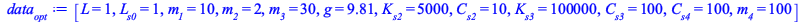 | (7.6.1) |
| > | evalf(subs(ics__opt, data__opt, t=0, MM)):
evalf(subs(ics__opt, data__opt, t=0, bb)): tmp:= LinearSolve(%%,%); |
| 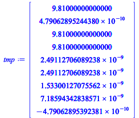 | (7.6.2) |
| > | <[op(diff(q_vars__opt,t,t)),lambda__1(t),lambda__1(t)]> = tmp;
ics_lambda := [lambda__1(t) = tmp[7],lambda__2(t) = tmp[8]]; |
| 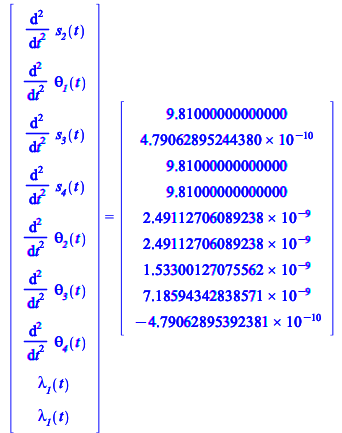 | |
| 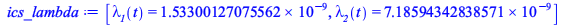 | (7.6.3) |
| > | dae_sys := convert(subs(data__opt,[op(convert(ode_sys__opt,list)),op(Phi)]),set): <op(%)>;
full_ics := subs( t = 0, convert(convert(ics__opt,set) union {ics_lambda[1]} union {ics_lambda[2]}, D)); |
| 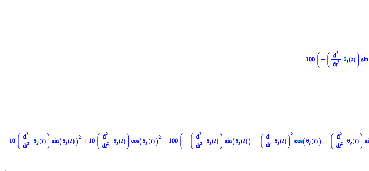 | |
| 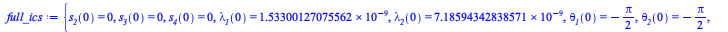 |
(7.6.4) |
| > | sol_dae__opt4 := dsolve(convert(dae_sys,set) union full_ics,numeric,implicit=true,maxfun=300000); |
| (7.6.5) |
| > | odeplot(sol_dae__opt4,subs(data,[t,G4[1]]),t=0..TF,
labels = ["time (s)", "(m)"], title = "Coordinate x of G4"); |
| 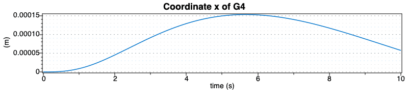 |
| > | odeplot(sol_dae__opt4,subs(data,[t,G4[2]]),t=0..TF,
labels = ["time (s)", "(m)"], title = "Coordinate y of G4"); |
| 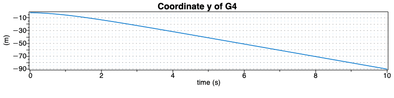 |
Plot the modulus of the acceleration of mass G4
| > | odeplot(sol_dae__opt4,subs(data,[t,sqrt(diff(G4[1],t,t)^2+diff(G4[2],t,t)^2)]),t=0..TF,
labels = ["time (s)", m/s^2], title = "Acceleration of G4"); |
| 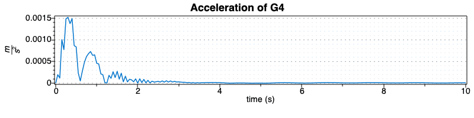 |
| > | odeplot(sol_dae__opt4,subs(data,[t,G1[1]]),t=0..TF,
labels = ["time (s)", "(m)"], title = "Coordinate x of G1"); |
| 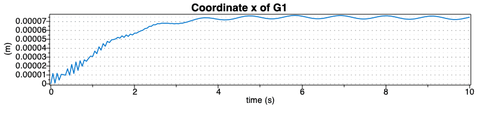 |
| > | odeplot(sol_dae__opt4,subs(data,[t,G1[2]]),t=0..TF,
labels = ["time (s)", "(m)"], title = "Coordinate y of G1"); |
| 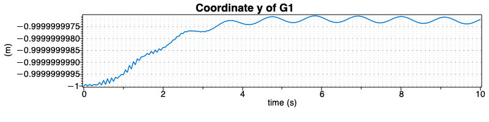 |